Recombinant DNA Technology
In our fmal chapter we describe a technology that in less than two decades has become fundamental to the advance of biochemistry. It helps to define present and future biochemical frontiers and illustrates many important principles of biochemistry. As the laws governing enzymatic catalysis, macromolecular structure, cellular metabolism, and information pathways continue to be elucidated, new research is directed at ever more complex biochemical processes. Cell division, the immune response, developmental processes in eukaryotes, vision, taste, oncogenesis, the cognitive processes in your brain as you read these words-all are orchestrated in an elaborate symphony of molecular and macromolecular interactions. As increasingly greater efforts are focused on understanding the biochemistry that underlies these processes, the real promise and implications of the biochemicaljourney begun in the nineteenth century become clear. Human beings not only can understand life, they can alter it.
The biochemical approach to understanding a complex biological process is to isolate and study the individual components in vitro with the goal of understanding the overall process in the whole organism. Perhaps the most fertile source for molecular insights into these processes lies in the cell's own information storehouse, its DNA. The sheer size of cellular chromosomes, however, presents us with an enormous barrier. How does one find and study a particular gene encoding a protein or RNA molecule with a molecular function we can only guess at, when that gene is only one of perhaps 100,000 genes scattered among the billions of base pairs that make up a mammalian genome? The answers began to appear in the mid-1970s.
Decades of advances in genetics, biochemistry, cell biology, and physical chemistry came together in the laboratories of Paul Berg, Herbert Boyer, and Stanley Cohen to yield techniques for locating, isolating, preparing, and studying small segments of DNA derived from much larger chromosomes. Taken together, these techniques are known as DNA cloning. DNA cloning has opened opportunities unimaginable just a few decades ago, including the identification and study of genes involved in almost every known biological process. These new methods are transforming basic research, agriculture, forensics, medicine, ecology, and many other fields, while at the same time presenting society with bewildering choices and serious ethical dilemmas.
Revolutionary as it is, this technology is grounded in the most fundamental biological and biochemical principles. The first two parts of this chapter outline these fundamentals, drawing on our understand ing of the chemistry and enzymes of nucleic acid metabolism described in the previous five chapters. We then turn to topics that help illustrate the range of applications and the potential of this technology.
To clone means to make identical copies; it is a term that was once restricted to the procedure of isolating one cell from a larger population of cells, then allowing it to reproduce itself to generate many identical cells. In such a way, sufficient quantities of a single cell type were made available for study. By analogy, DNA cloning involves separating a specific gene or segment of DNA from its larger chromosome and attaching it to a small molecule of carrier DNA, then replicating this modified DNA thousands or even millions of times. The result is a selective amplification of that particular gene or DNA segment. Cloning a segment of DNA, either prokaryotic or eukaryotic, entails five general procedures:
l. A method for cutting DNA at precise locations. The discovery of sequence-specific endonucleases (restriction endonucleases) provided the necessary molecular scissors.
2. A method for joining two DNA fragments covalently. DNA ligase can do this.
3. Selection of a small molecule of DNA capable of self replication. Segments of DNA to be cloned can be joined to plasmids or viral DNAs (cloning vectors). These composite DNA molecules containing covalently linked segments derived from two or more sources are called recombinant DNAs.
4. A method for moving recombinant DNA from the test tube into a host cell that can provide the enzymatic machinery for DNA replication.
5. Methods to select or identify those host cells that contain recombinant DNA.
The methods used to accomplish these and related tasks are collectively referred to as recombinant DNA technology, or more informally as genetic engineering. We now turn to these methods, with emphasis on their biochemical origins.
In this initial discussion we will focus on DNA cloning in the bacterium E. coli, which was the first organism used for recombinant DNA work and is still the most common host cell. E. coli has many advantages: its DNA metabolism (and many other biochemical processes) are well understood; many naturally occurring cloning vectors such as bacteriophages and plasmids associated with E. coli are well characterized; and effective techniques are available for moving DNA from onebacterial cell to another. DNA cloning in other organisms will be addressed later in the chapter.
Particularly important to recombinant DNA technology is a set of enzymes made available by decades of research on nucleic acid metaboism (Table 28-1). Two enzymes in particular lie at the heart of the general approach to generating and propagating a recombinant DNA molecule as outlined in Figure 28-1. First, restriction endonucleases cleave DNA at specific sequences to generate a set of smaller fragments. Second, the DNA fragment to be cloned can be isolated and joined to a suitable cloning vector using DNA ligase to seal the DNA molecules together. The recombinant vector is then introduced into a host cell, which "clones" it as the cell undergoes many generations of cell divisions.
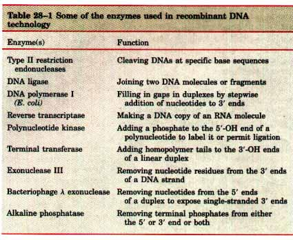 Restriction endonucleases are found in a wide range of bacterial species. Werner Arber discovered that their biological function is to recognize and cleave foreign DNA (e.g., the DNA of an infecting virus); such DNA is said to be restricted. The cell's own DNA is not cleaved because the sequence recognized by the restriction endonuclease is methylated (and thereby protected) by a specific DNA methylase. The restriction endonuclease and the corresponding methylase in a bacterium are sometimes referred to as a restriction-modification system. There are three types of restriction endonucleases, designated I, II, and III. Types I and III are generally large, multisubunit complexes containing both the endonuclease and methylase activities. Type I restriction endonucleases cleave DNA at random sites that can be 1,000 base pairs or more from the recognition sequence. Type III enzymes cleave the DNA about 25 base pairs from the recognition sequence. Both types of enzyme move along the DNA in a reaction that requires the energy of ATP. The type II restriction enzymes, first isolated by Hamilton Smith, are simpler, require no ATP, and cleave the DNA within the recognition sequence itsel?The extraordinary utility of the type II enzymes was first demonstrated by Daniel Nathans, and these are the enzymes used most widely for recombinant DNA work. |
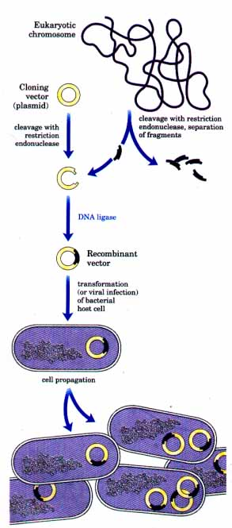 Figure 28-1 Schematic illustration of DNA cloning. A fragment of DNA of interest to the researcher is obtained by cleaving a eukaryotic chromosome with a restriction endonuclease. After isolating the fragment and ligating it to a cloning vector that has also been cleaved with a restriction endonuclease, the resulting recombinant DNA is introduced into a host cell where it can be propagated (cloned). Note that the size of the E. coli chromosome relative to that of a typical cloning vector such as a plasmid is much greater than depicted here. |
More than 800 restriction endonucleases have been discovered in different bacterial species. Over 100 different specific sequences are recognized by one or more of these enzymes. These sequences are almost always short (four to six base pairs, occasionally more) and palindromic (see Fig. 12-20). A sampling of sequences recognized by some type II restriction endonucleases is presented in Table 28-2. Note that the name of each enzyme consists of a three-letter abbreviation of the bacterial species from which it is derived (e.g., Bam for Bacillus amyloliquefaciens, Eco for Escherichia coli). 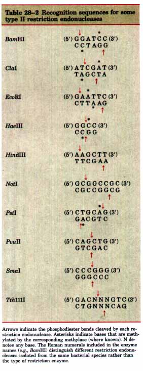 |
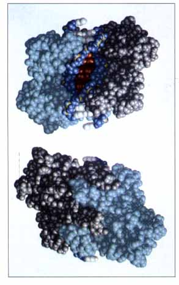 Figure 28-2 The interaction of EcoRI endonuclease with its target sequence. The dimeric enzyme (with its two subunits in gray and light blue) is shown bound to DNA. In the top view the DNA binding site is facing the viewer. In the bottom view the bound DNA is facing away from the viewer and is not visible. In the bound DNA, the bases that make up the recognition site for EcoRI are shown in red. |
In a few cases, the interaction between a restriction endonuclease and its target sequence has been elucidated in exquisite molecular detail. The complex comprising the type II restriction endonuclease EcoRI and its target sequence is illustrated in Figure 28-2. DNA sequence recognition by EcoRI is mediated by 12 hydrogen bonds formed between the purines in the recognition site and six amino acid residues in the dimeric endonuclease (one Glu and two Arg residues in each subunit). Some restriction endonucleases cleave both strands of DNA so as to leave no unpaired bases on either end; these ends are often called blunt ends (Fig. 28-3a). Others make staggered cuts on the two DNA strands, leaving two to four nucleotides of one strand unpaired at each resulting end. These are referred to as cohesive ends or sticky ends (Fig. 28-3a) because they can base-pair with each other or with complementary sticky ends of other DNA fragments.
Arrows indicate the phosphodiester bonds cleaved by each restriction endonuclease. Asterisks indicate bases that are methylated by the corresponding methylase (where known). N denotes any base. The Roman numerals included in the enzyme names (e.g., BamHI) distinguish different restriction endonucleases isolated from the same bacterial species rather than the type of restriction enzyme.
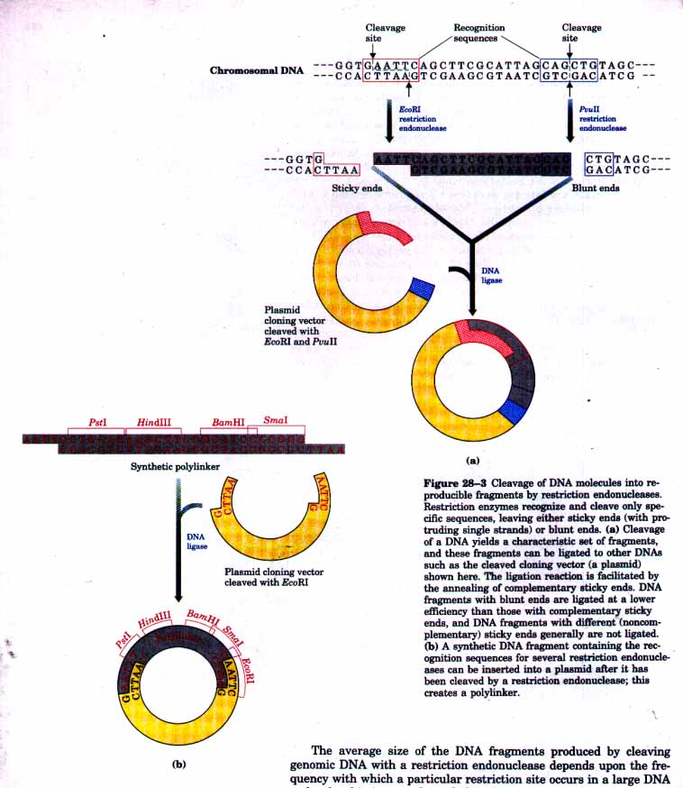
The average size of the DNA fragments produced by cleaving genomic DNA with a restriction endonuclease depends upon the frequency with which a particular restriction site occurs in a large DNA molecule; this in turn depends largely on the size of the recognition sequence. In a DNA molecule with a random sequence in which all four nucleotides are equally abundant, a 6 base pair sequence recognized by a restriction endonuclease such as BamHI will occur on average once every 46, or 4,096, base pairs. Enzymes that recognize a 4 base pair
sequence will produce smaller DNA fragments; a recognition sequence of this size would be expected to occur on average every 256 base pairs. These sequences tend to occur less frequently than this because nucleotide sequences in DNA are not random and the four nucleotides are not equally abundant. The average size of the fragments produced by restriction endonuclease cleavage of a large DNA can be increased by simply not allowing the reaction to go to completion. Such an incomplete reaction is often called a partial digest.
Once a DNA molecule has been cleaved into fragments, a particular fragment that a researcher is interested in can be separated from the others by agarose gel electrophoresis (p. 347) or HPLC (p. 122). Because cleavage of a typical mammalian genome by a restriction endonuclease may yield several hundred thousand different fragments, isolation of a particular DNA fragment by electrophoresis or HPLC is often impractical. In these cases an intermediate step in the cloning of a specific gene or DNA segment of interest is the construction of a DNA library, described later in the chapter.
When the target DNA fragment is isolated, it is joined to a cloning vector using DNA ligase. The base-pairing of complementary sticky ends greatly facilitates the ligation reaction (Fig. 28-3). Because dif ferent restriction endonucleases usually generate different sticky ends, the efficiency of the ligation step is greatly affected by the endonucleases used to generate the DNA fragments. A fragment generated by EcoRI generally will not be linked to a fragment generated by BamHI. Blunt ends can also be ligated, albeit less efficiently.
Before ligating two DNA fragments, it is often useful to add recognition sequences for a restriction endonuclease (other than that used to create the fragments) at the junction to permit cleavage of the ligated DNA at that location later on. This is often done by inserting a synthetic DNA fragment containing the required recognition sequence between the two DNA fragments. Such a synthetic DNA fragment is generally called a linker. A synthetic fragment containing recognition sequences for several restriction endonucleases is called a polylinker (Fig. 28-3b).
The importance of sticky ends in efficiently joining two DNA fragments in a desired manner was apparent in the earliest recombinant DNA experiments. Before restriction endonucleases were widely available, some workers found that sticky ends could be generated by the combined action of the bacteriophage .~ exonuclease and terminal transferase (Table 28-1). The fragments to be joined were given complementary homopolymeric tails (Fig. 28-4, p. 990). This method was used by Peter Lobban and Dale Kaiser in 1971 in the first experiments to join naturally occurring DNA fragments. Similar methods were used soon after in the laboratory of Paul Berg to join DNA segments from simian virus 40 (5V40) to DNA derived from bacteriophage λ, thereby creating the first recombinant DNA molecule involving DNA segments from different species.
Three types of cloning vectors-plasmids, bacteriophages, and cosmids-are commonly used in E. coli. Plasmids (see Fig. 23-3) are circular DNA molecules that replicate separately from the host chromosome. Naturally occurring bacterial plasmids range in size from 5,000 to 400,000 base pairs.
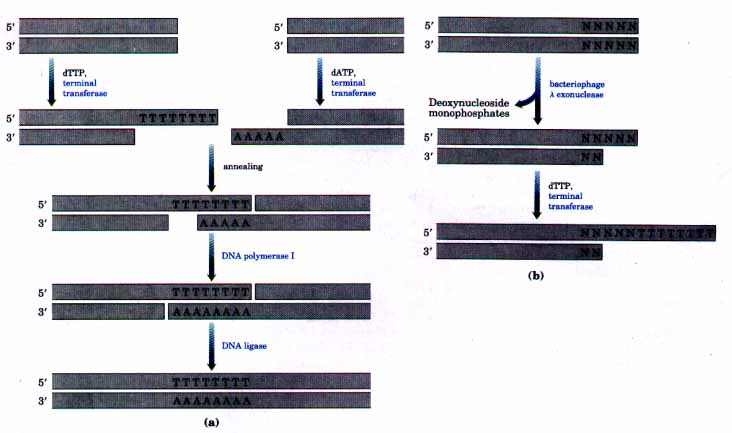
Figure 28-4 Sticky ends generated by terminal transferase can be used to join two DNA fragments. (a) Complementary homopolymeric tails are added to the ends of the two fragments to be joined, forming sticky ends. After annealing, the gaps are filled and the nicks sealed by the action of DNA polymerase I and DNA ligase (Chapter 24). (b) The optimal substrate for terminal transferase is the 3' OH at the end of a single strand of DNA at least three nucleotides long. If the ends of the duplex DNA have a 5' protruding single strand or are blunt ends, the A exonuclease (which degrades DNA strands in the 5'→3' direction) can be used to create a good substrate for terminal transferase. N denotes any base.
| Plasmids can be introduced
into bacterial cells by a process called transformation.
To get the cells to take up the DNA, the cells and DNA
are incubated together at 0 ? in a calcium chloride
solution, then subjected to heat shock by rapidly
shifting the cells to temperatures of 37 to 43 ?. For
reasons not entirely understood, cells so treated become
"competent" to take up the DNA. Because only a
few cells take up the plasmid DNA, a method is needed for
selecting those that do. The usual strategy is to build
into the plasmid a gene that the host cell requires for
growth under specific conditions. This makes a cell that
contains the plasmid "selectable" if the cell
is grown under those conditions. The gene, sometimes
called a selectable marker, is often one that confers
resistance to an antibiotic. Only those few cells that
have been transformed by the recombinant plasmid will be
antibiotic resistant and thus able to grow in the
presence of the antibiotic. Many different plasmid vectors suitable for cloning have been developed by modifying naturally occurring plasmids. Some of the important features of a cloning vector are illustrated by the E. coli plasmid pBR322 (Fig. 28-5): (1) the origin of replication is required to propagate the plasmid and helps maintain it at a level of 10 to 20 copies per cell; (2) two genes that confer resistance to different antibiotics allow the selection of cells that contain the plasmid or a recombinant version of it (Fig. 28-6); (3) several unique recognition sequences for different restriction endonucleases provide sites where the plasmid can be cut and foreign DNA inserted; and (4) an overall small size facilitates the plasmid's entry into cells. The efficiency of bacterial transformation decreases as plasmid size increases, and it is difficult to clone DNA segments longer than about 15,000 base pairs when plasmids are used as the vector. 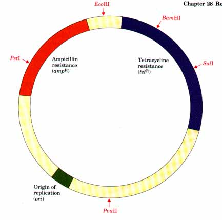 Figure 28-5 The constructed plasmid pBR322, showing the location of some important restriction sites, antibiotic-resistance genes, and the replication origin (ori). This plasmid, constructed by Herbert Boyer and coworkers in 1977, was one of the early plasmids designed expressly for cloning in E. coli. |
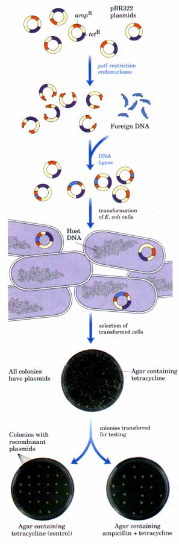 Figure 28-6 Cloning foreign DNA in E. coli with pBR322. If foreign DNA is inserted at the PstI restriction site, the ampicillin-resistance element is disrupted and inactivated. After ligation of the DNA and transformation of E. coli cells, the cells are grown on agar plates containing tetracycline to select for those that have taken up a plasmid. By means of sterile toothpicks, individual colonies from these agar plates are transferred to the same position within a grid on two additional plates; one plate contains tetracycline (a control) and the other contains both tetracycline and ampicillin. Those cells that grow in the presence of tetracycline, but do not form colonies on the plate containing tetracycline plus ampicillin, contain recombinant plasmids (the ampicillin-resistance element is nonfunctional). Cells that contain pBR322 that was ligated without the insertion of a foreign DNA fragment retain ampicillin resistance and grow on both plates. Note that in this and other experiments that involve the use of two or more plate replicas an orienting mark is put on the back of each plate so that the colonies on different plates can be readily aligned. |
Somewhat larger DNA segments can be cloned using bacteriophage λ as a vector. Bacteriophage λ has a very efficient mechanism for delivering its 48,502 base pairs of DNA into a bacterium. The general procedure for cloning DNA in bacteriophage λ (Fig. 28-7) is based on two key features of the λ genome: (1) about one-third of the genome is nonessential and can be replaced with foreign DNA, and (2) DNA will be packaged into infectious phage particles only if it is between 40,000 and 50,000 base pairs long. Bacteriophage λ vectors have been developed that can be readily cleaved into three pieces, two of which contain essential genes but which together are only about 30,000 base pairs long. Additional DNA must therefore be inserted between them to produce viable phage particles. Bacteriophage λ vectors permit the cloning of DNA fragments up to 23,000 base pairs long, and their design ensures that all viable phage particles will contain a foreign DNA fragment. Once the bacteriophageλ fragments are ligated to foreign DNA fragments of suitable size, the resulting recombinant DNAs can be packaged into phage particles by adding them to crude bacterial cell extracts containing all the proteins needed to assemble a complete phage. This is called in vitro packaging (Fig. 28-7). The bacteriophage vector is now ready for insertion of the recombinant DNA into E. coli cells. Cosmids are recombinant plasmids that combine useful features of both plasmids and bacteriophage λ. They are designed to permit the cloning of even larger DNA fragments (up to 45,000 base pairs). Cosmids (Fig. 28-8) are small (typically 5,000 to 7,000 base pairs), circular DNA molecules that contain (1) a plasmid origin of replication, (2) one or more selectable markers, (3) a number of unique restriction sites where foreign DNA can be inserted, and (4) a cos site (a DNA sequence in bacteriophage a that is required for packaging). |
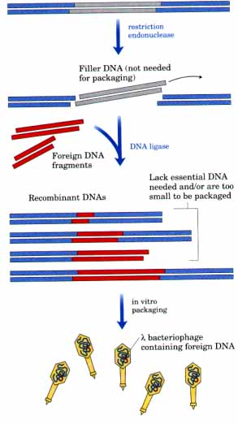 Figure 28-7 Bacteriophage λ cloning vectors. Recombinant DNA methods have been used to remove nonessential genes and certain restriction sites from the bacteriophage λ genome. The remaining genes (essential for bacteriophage production) are clustered in two large fragments at either end of the linear chromosome. Bacteriophage λ vectors generally have a piece of "filler" DNA in place of the eliminated genes to make the vector DNA large enough for packaging into phage particles. This filler can be replaced with foreign DNA in cloning experiments. Recombinants are packaged into viable phage particles only if they are of the appropriate size (i.e., they include an appropriately sized foreign DNA fragment) and include both of the essential λ DNA end fragments. The recombinant DNA molecules are packaged into phage particles in vitro. |
| Cosmids contain no other bacteriophage λ
genes and can be propagated in E. coli like plasmids.
When a large foreign DNA fragment is cloned into them,
transformation of E. coli with these recombinant DNA
constructs becomes difficult. If the cosmid contains a
large enough insert of foreign DNA to be packaged into a
phage particle, in vitro λ packaging systems permit the
bacteriophage ~ particle to be the vehicle for
introducing the cosmid DNA efficiently into the bacterial
cell. Once in the cell, the cosmid is again propagated as
a plasmid, as it lacks the λ genes needed to make phage
particles in the cell. The three types of cloning vectors are summarized in Table 28-3. 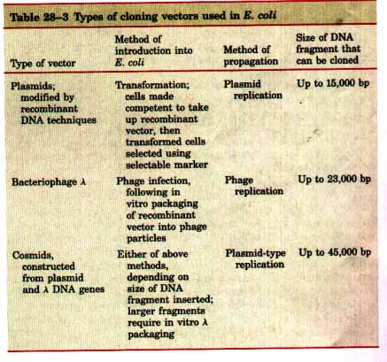 |
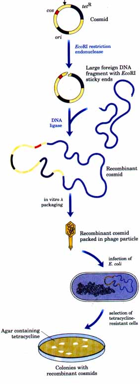 Figure 28-8 Cloning with cosmids. A cosmid contains a replication origin (ori) for propagation as a plasmid, and a cos site required for the packaging of DNA into λ phage particles. Unique restriction sites and antibiotic-resistance elements aid cloning and selection. Inserting a large foreign DNA fragment into the cosmid precludes bacterial transformation but, if the recombinant DNA molecule is a suitable size, it can be packaged into phage particles in vitro. The phage λ particles are then used to introduce the cosmid into bacterial cells, where the cosmid is propagated as a plasmid. |